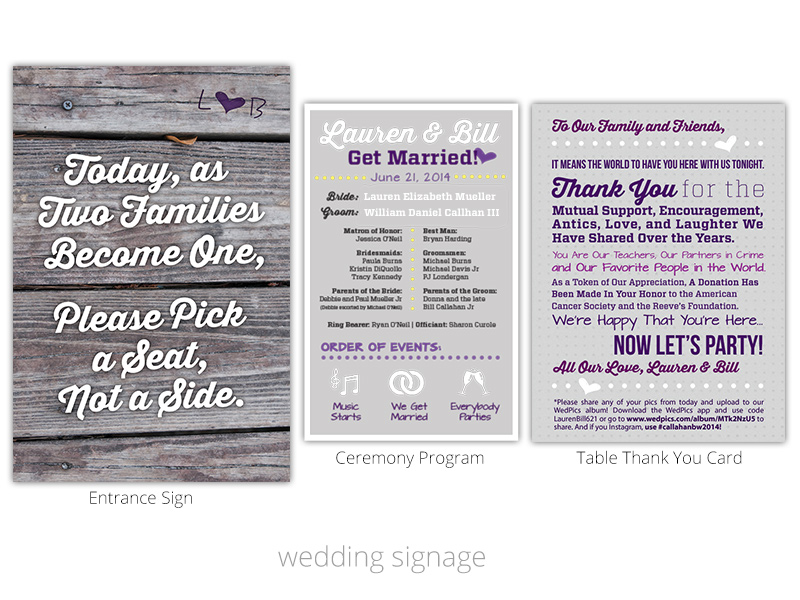
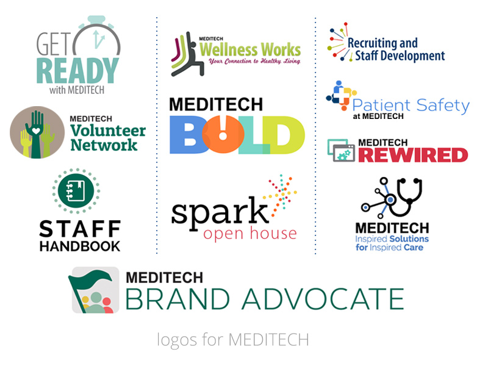
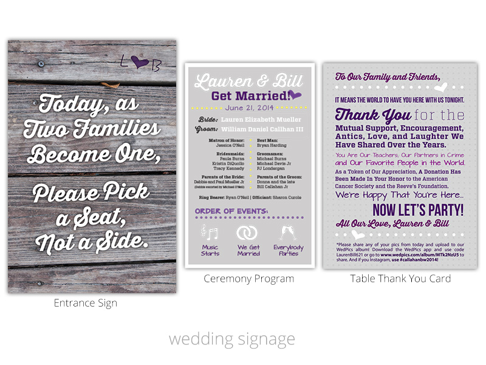
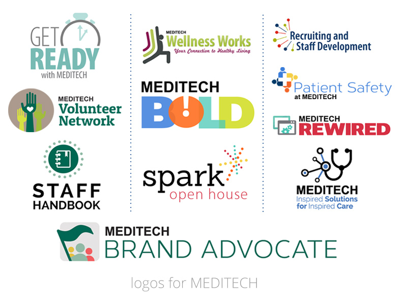

In the classic computer game, The Sims, a character can stand in front of a mirror for an hour and gain charisma points. With these points, they are able to talk and influence others at ease. Well. If only it were that easy! No matter how long I talk in the mirror (wait, what?), I still find it hard to speak or write about myself. Instead, I've created a buzzword bio - you know, like all the annoying celebs on Twitter have!
Designer. Realist. List Maker. List Doer. List Crosser-Offer!(?)
Looking for a less sarcastic description of me? Here are a things that you might want to know if you'd ever like to work with me:
- Graphic Designer at MEDITECH — lead designer for internal and customer events
- Proud Merrimack College alum with a degree in Digital Design and a minor in Communications
- Nearly six years of professional work experience in industries such as healthcare, higher education, and finance
- Specialize in print media — specifically logos, signage, brochures, invites, etc.
- Self-motivated, organized, and completely incapable of procrastinating
Contact me at kathgmariano@gmail.com if you are in need of a designer for projects like logos, infographics, presentations, business cards, brochures, or posters. I'd be happy to work with you!
Still want more? Even after that Sims analogy?

 



kamar design | Kathryn Mariano | kathGmariano@gmail.com | (781) 258-2078